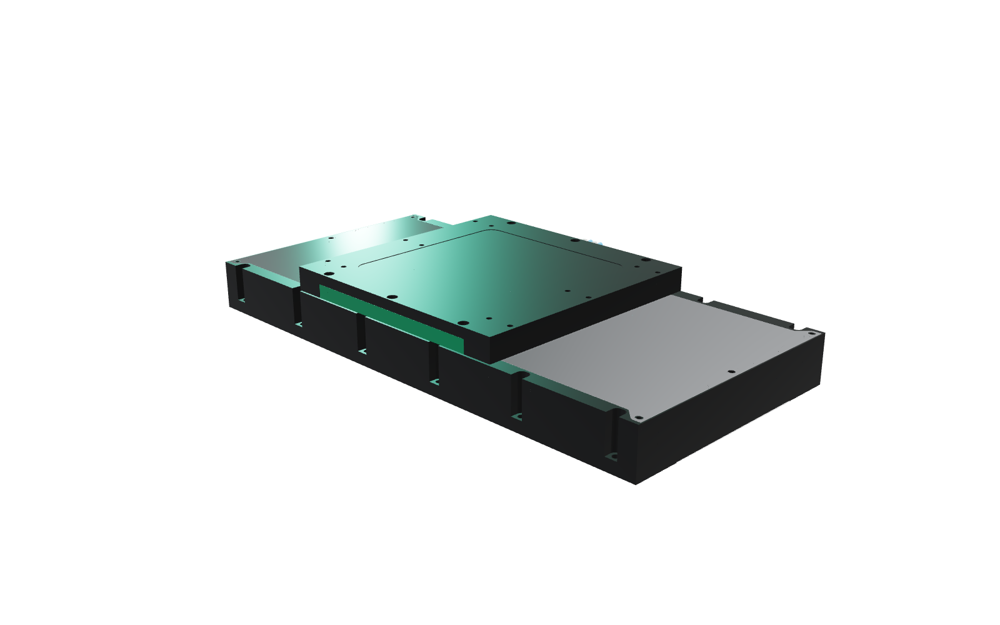

Assembled stages and parts
We sell complete stages, assembled and aligned, ready to bolt on. We also sell single parts, so you can build your own version of the design.
Linear-motor stage · Early access open
AQTUATOR CS is a compact linear-motor stage, only 60 mm high, with an absolute 0.1 µm encoder. The design is open hardware. We sell finished stages and parts, and licences that let you build on the design and keep your own design closed.

What you can buy
We sell complete stages, assembled and aligned, ready to bolt on. We also sell single parts, so you can build your own version of the design.
Under the open CERN-OHL-S licence, any machine with the stage built in must have an open design too. A commercial licence removes that duty, so your machine design can stay closed.
Why AQTUATOR CS
Most fast, accurate stages are tall or closed-source. Most compact stages use a screw or a belt. We wanted all of the good parts in one 210 × 60 mm section.
An iron-core linear motor pushes the carriage directly. There is no ball screw, belt or coupling. So there is no backlash, no wind-up and no screw whip at speed.
181 N continuous · 512 N peak · 2 m/s
An absolute steel-tape encoder reads the carriage directly, with a 0.1 µm step. No homing run at start-up. The position loop sees the carriage, not the motor.
±0.1 µm repeatability · ±15 µm without mapping
Motor, guides and encoder all fit in a section of 210 × 60 mm. The stage fits under a microscope, in a narrow machine or in a low XY stack.
210 × 60 mm section
The base and the carriage share one 80 mm screw grid. Turn a second stage 90° and screw it on: you have a cross table. No adapter plate.
80 mm grid · M5 · two stages = XY
Water flows through the carriage and takes the motor heat away. So the stage and your part keep the same temperature. The base is one solid block of aluminium, so it bends as little as possible.
Water-cooled forcer · one-piece aluminium base
The CAD and the requirements are public under CERN-OHL-S. You can check every number, service the stage yourself and design around it. No lock-in.
CERN-OHL-S-2.0 · FreeCAD
Inside the stage
Scroll to take the stage apart. This is the real CAD model, not an illustration.
Configure
Six travels from 220 to 600 mm. The section, the motor and the accuracy stay the same. Only the length changes.
Specifications
Design targets We are building the first stages now. Measured values will replace these targets.
Positioning accuracy without mapping: ±15 µm for every travel. Masses for travels other than 220 mm are estimates, scaled from the 220 mm design. The drive limits the speed to suit the payload, so the end stops can always stop the carriage.
Cross table
The outer rows of the carriage holes sit 200 mm apart, exactly like the rows of the base holes. Turn the upper stage 90°, put twelve M5 screws in, done.
Compare
Typical values for compact stages of the same size class.
| AQTUATOR CS | Typical ball-screw stage | Typical belt stage | |
|---|---|---|---|
| Drive | Iron-core linear motor, direct | Motor, coupling, screw, nut | Motor, pulleys, toothed belt |
| Top speed | 2 m/s | 0.1 – 0.5 m/s (screw whip) | 2 – 5 m/s |
| Backlash | None | Low with preload | Belt stretch and play |
| Feedback | Absolute linear, 0.1 µm, at the carriage | Usually rotary at the motor | Usually rotary at the motor |
| Repeatability | ±0.1 µm | ±1 – 5 µm | ±10 – 50 µm |
| Wear in the drive | None | Screw and nut | Belt |
| XY without adapter | Yes, 80 mm grid | Rarely | Rarely |
| Design files | Open (CERN-OHL-S) | Closed | Closed |
Applications
Fast, smooth scans with no ripple from a screw.
Absolute position at the carriage, 0.1 µm step, no homing after power-up.
Sub-micron repeatability in a stack low enough for a microscope or a fibre bench.
512 N peak force and a stiff, direct drive for light cutting and grinding axes.
2 m/s and high acceleration with no belt to stretch or screw to wear.
Open CAD and requirements: change it, mount it, publish with it.
Open hardware
The design of AQTUATOR CS is public: the requirements, the parametric parts in FreeCAD and the bill of materials. Buy a ready, tested stage from us, or study and adapt the design under the CERN Open Hardware Licence.
Early access
We are building the first series now. Tell us what you want to move, how far and how fast, or what you want to build the design into. We reply in person. Early-access customers get first delivery and a say in the final specification.
Join us
Contributors govern REFAQT and share the profit, in line with how much they contribute. We are looking for people who help with our designs, and for companies that offer our modules and machines to their customers.